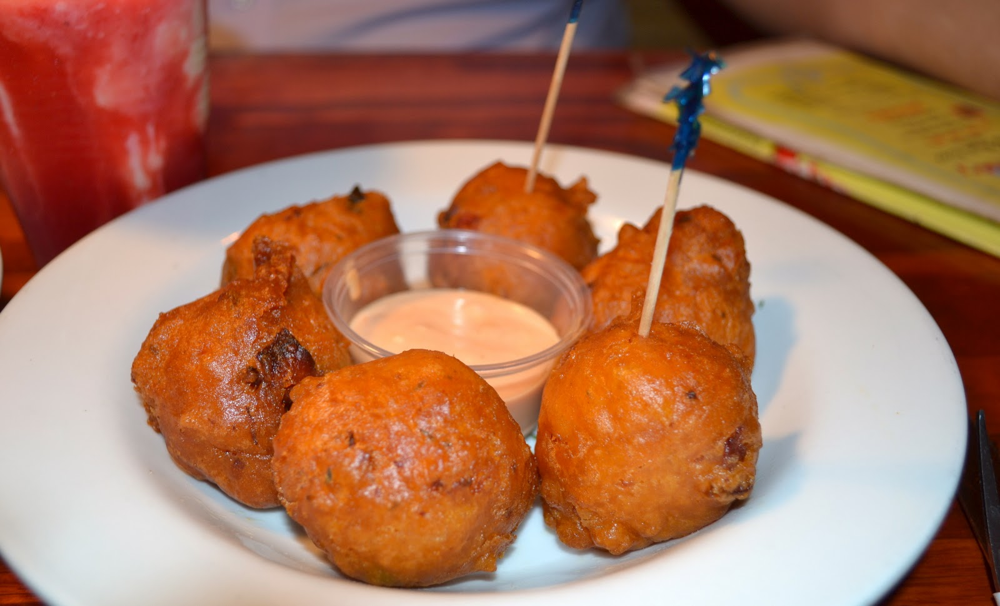

Bahamian Conch Fritters are a savoury traditional side, similar to crab cakes.
Recipe source
Ingredients
- 1 quart oil for frying
- ¾ cup all-purpose flour
- 1 egg
- ½ cup milk
- Salt and pepper, to taste
- Cayenne pepper, to taste
- 1 cup chopped conch meat (substitute lobster if conch is unavailable)
- ½ medium white onion, chopped
- ½ green pepper, chopped
- 2 stalks celery, chopped
- 2 cloves garlic, chopped
Steps
- In a large pot or deep fryer, heat oil to 365°F.
- Mix the flour, egg, and milk in a large bowl.
- Season with salt, pepper, and cayenne pepper.
- Mix in the chopped conch meat, onion, green pepper, celery, and garlic until well blended.
- Drop rounded tablespoons of the mixture into the hot oil and fry until golden brown.
- Drain on paper towels.
- Serve with ketchup, mayonnaise, or your choice of dipping sauce on the side.